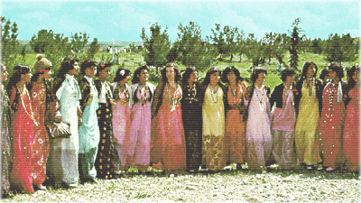

Long ago, before humanity had its organised religions and pontificating priests, the celebrations of people revolved around the key dates in the year-the harvest time, midwinter, the coming of spring, longest day etc.
The seasons and their rhythms controlled both the farmer and the herder and dictated the peace and nature of their celebrations.

Organised religions have always resented these "people festivals" and have converted them into "saints day" or banned them altogether. Yet two of these have survived despite repression and proscription and are still with us today.
One is the midwinter('Yule') that even now manages to push its way through the Christmas and other religious veneers given to the longest night celebrations. The other celebration that still survives intact is that which welcomes the Vernal (spring) Equinox, the time when the days become longer than the night and winter has clearly ended. This festival has been kept alive throughout many communities in the middle East but non more strongly than by the Kurdish people.
This day is called NEWROZ Literally NEW DAY and has been celebrated for literally thousands of years in the Zagros mountains and surrounding area. It pre-dates even the Zoroastrian religion of the area but became part of it and was a joyous and noisy event that all the Kurds looked forward to every year. With the coming of Islam in the eight and ninth centuries, Newroz became a festival that represented the struggle of the Kurds for freedom against the various enemies who attempted to subjugate them-whether it was Arab armies, Christian crusaders, Mongol cavalry or Ottoman Turks. Throughout the long centuries since, Newroz each year has been celebrated, sometimes in secret but always in joy, by everyone who considers themselves Kurdish.
The Kurdish legends say that Newroz celebrates the overthrow of ZUHAK the tyrant, who in various stores had snakes growing out of his shoulders and required human sacrifices to control his affliction. He was eventually defeated when a brave blacksmith by the name of KAWA led a revolt against him and freed the people.
Since the re-emergence of Kurdish national awareness in the last century,
Newroz has become the symbol of a people rejoicing in their tradition but
at the same time defying their respective oppressors. Newroz in 1946 saw the proclamation of Mahabad Republic in Iranian Kurdistan and more recently it marked the high-point of the uprising in 1991 against the Saddam and the Ba'athists in Iraq.
THE KURDISH PEOPLE CELEBRATE NAWROZ AS A SYMBOL OF THE MASS STRUGGLE AGAINST TYRANNY
By Alex Atroushi
Nawroz literally means the "New Day"; it marks the first day of the spring season, where the life and energy are renewed in every aspect of nature after a hard winter. Moreover, it signs a day of victory for the people over the regiment of tyranny and regression after a preached struggle.
The story goes back to over two thousand years ago, when the toilers united under the leadership of a blacksmith Kawa, who led them a revolutionary uprising against the oppressor king ZUHAK, who used to ease his impossible sickness, as the folk story tells, by killing one youth every day. The revolution culminated in the killing of the tyrant with the hammer of Kawa. The people lighted up fires to announce the news and proclaiming their happiness and delight over the removal of the source of misery, injustice and oppression. The fires are considered in the Kurdish literature and culture as a symbol of freedom and liberation.
Kurds as well as other people, such as the Farsis, Baluchis, Aziris and Afghans, everywhere celebrate this national occasion. On the day of the festival bonfires are lit on the peak of mountains and on the tops of hills. Folk dances are performed in rural areas and urban centers throughout Kurdland and in the neighboring countries.
Kurds from all parts of Kurdland, whether in their own country or living as refugees abroad, will celebrate this occasion as usual every year. Social gatherings are arranged and they will be attended by large numbers of Kurds and their guests, various activities will be presented, including Kurdish music and dancing, performed by both Kurdish women and men in their bright, colorful national costume. Kurdish food is also offered.
We take this opportunity of wishing all Kurds and friends of the Kurdish people a Happy Nawroz.
Kurdistan Democratic Party - Iraq
Information Office-Internet
Information officer Alex Atroushi
Tel: + 46 70 790 40 97 + 46 73 509 40 97 Sweden
Fax: + 44 20 818 16 293 UK